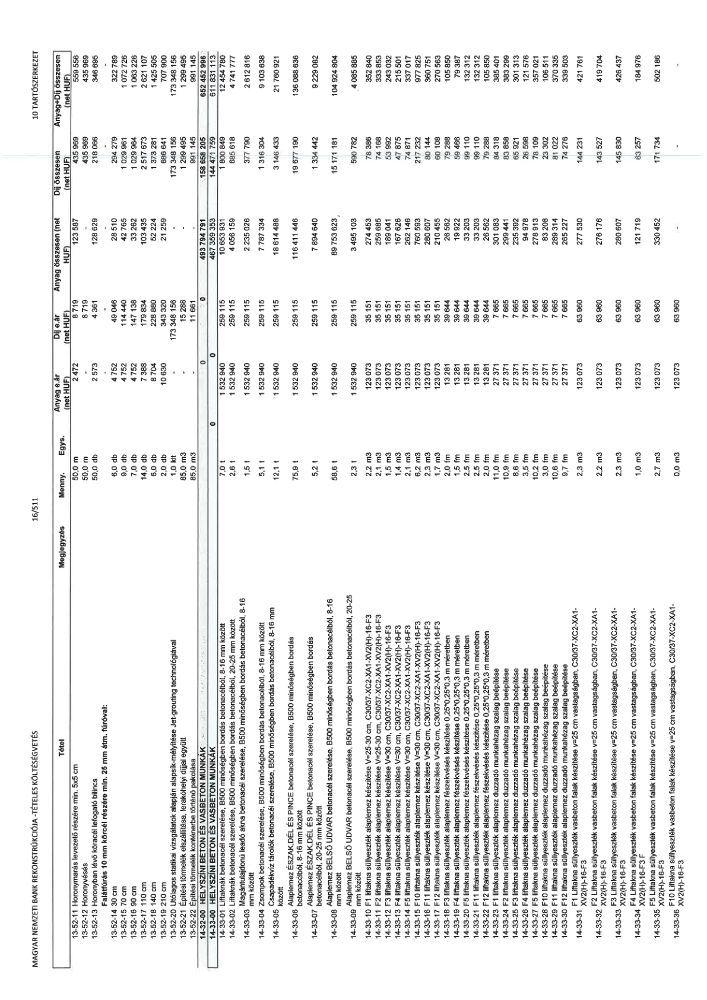

| Tétel | Megjegyzés | Menny. | Egys. | Anyag e.ár (net HUF) | Díj e.ár (net HUF) | Anyag összesen (net HUF) | Díj összesen (net HUF) | Anyag+Díj összesen (net HUF) |
|---|---|---|---|---|---|---|---|---|
| 13-52-11 Horonymarás levezető részére min. 5x5 cm | NaN | 50,0 | m | 2 472 | 8 719 | 123 587 | 435 969 | 559 556 |
| 13-52-12 Horonyvésés | NaN | 50,0 | m | 0 | 8 719 | 0 | 435 969 | 435 969 |
| 13-52-13 Horonyban lévő köracél lefogató bilincs Falátfúrás 10 mm köracél részére min. 25 mm átm. fúróval: | NaN | 50,0 | db | 2 573 | 4 361 | 128 629 | 218 066 | 346 695 |
| 13-52-14 30 cm | NaN | 6,0 | db | 4 752 | 49 046 | 28 510 | 294 279 | 322 789 |
| 13-52-15 50 cm | NaN | 10,0 | db | 4 752 | 94 449 | 47 517 | 944 492 | 992 009 |
| 13-52-16 90 cm | NaN | 7,0 | db | 4 752 | 147 138 | 33 262 | 1 029 964 | 1 063 226 |
| 13-52-17 110 cm | NaN | 14,0 | db | 7 388 | 179 834 | 103 435 | 2 517 673 | 2 621 107 |
| 13-52-18 140 cm | NaN | 6,0 | db | 8 704 | 228 880 | 52 224 | 1 373 281 | 1 425 505 |
| 13-52-19 210 cm | NaN | 2,0 | db | 10 630 | 343 320 | 21 259 | 686 641 | 707 900 |
| 13-52-20 Vizsgálóablak | NaN | 1,0 | db | 0 | 173 349 938 | 0 | 173 349 938 | 173 349 938 |
| 13-52-21 Építési törmelék elszállítása, lerakóhelyi díjjal együtt - Jetgrouting technológiával | NaN | 85,0 | m3 | 0 | 15 288 | 0 | 1 299 465 | 1 299 465 |
| 13-52-22 Építési törmelék konténerbe történő pakolása | NaN | 85,0 | m3 | 0 | 11 661 | 0 | 991 145 | 991 145 |
| 14-00-00 HELYSZÍNI BETON ÉS VASBETON MUNKÁK | NaN | NaN | NaN | 0 | 0 | 493 794 791 | 158 652 205 | 652 446 996 |
| 14-33-00 HELYSZÍNI BETON ÉS VASBETON MUNKÁK | NaN | NaN | NaN | 0 | 0 | 467 359 353 | 144 471 759 | 611 831 113 |
| 14-33-01 Liftaknák betonacél szerelése, B500 minőségben bordás betonacélból, 8-16 mm között | NaN | 7,0 | t | 1 532 940 | 259 115 | 10 686 030 | 1 806 333 | 12 492 362 |
| 14-33-02 Liftaknák betonacél szerelése, B500 minőségben bordás betonacélból, 20-25 mm között | NaN | 2,6 | t | 1 532 940 | 259 115 | 4 056 159 | 685 618 | 4 741 777 |
| 14-33-03 Magántulajdonú leadó akna betonacél szerelése, B500 minőségben bordás betonacélból, 8-16 mm között | NaN | 1,5 | t | 1 532 940 | 259 115 | 2 235 026 | 377 790 | 2 612 816 |
| 14-33-04 Zsompok betonacél szerelése, B500 minőségben bordás betonacélból, 8-16 mm között | NaN | 5,1 | t | 1 532 940 | 259 115 | 7 866 334 | 1 329 590 | 9 195 924 |
| 14-33-05 Csapadékvíz tárolók betonacél szerelése, B500 minőségben bordás betonacélból, 8-16 mm között | NaN | 12,1 | t | 1 532 940 | 259 115 | 18 614 468 | 3 146 433 | 21 760 901 |
| 14-33-06 Alaplemez ÉSZAK,DÉL, ÉS PINCE betonacél szerelése, B500 minőségben bordás betonacélból, 8-16 mm között | NaN | 75,9 | t | 1 532 940 | 259 115 | 116 411 448 | 19 677 190 | 136 088 638 |
| 14-33-07 Alaplemez BELSŐ UDVAR betonacél szerelése, B500 minőségben bordás betonacélból, 20-25 mm között | NaN | 5,2 | t | 1 532 940 | 259 115 | 7 894 640 | 1 334 442 | 9 229 082 |
| 14-33-08 Alaplemez BELSŐ UDVAR betonacél szerelése, B500 minőségben bordás betonacélból, 8-16 mm között | NaN | 58,6 | t | 1 532 940 | 259 115 | 89 753 623 | 15 171 181 | 104 924 804 |
| 14-33-09 Alaplemez BELSŐ UDVAR betonacél szerelése, B500 minőségben bordás betonacélból, 20-25 mm között | NaN | 2,3 | t | 1 532 940 | 259 115 | 3 495 103 | 590 782 | 4 085 885 |
| 14-33-10 F1 Liftakna süllyeszték alaplemez készítése V=25-30 cm, C30/37-XC2-XA1-XV2(H)-16-F3 | NaN | 2,2 | m3 | 123 073 | 35 151 | 274 453 | 78 386 | 352 840 |
| 14-33-11 F2 liftakna süllyeszték alaplemez készítése V=25-30 cm, C30/37-XC2-XA1-XV2(H)-16-F3 | NaN | 2,1 | m3 | 123 073 | 35 151 | 259 685 | 74 168 | 333 853 |
| 14-33-12 F3 liftakna süllyeszték alaplemez készítése V=30 cm, C30/37-XC2-XA1-XV2(H)-16-F3 | NaN | 1,5 | m3 | 123 073 | 35 151 | 189 041 | 53 992 | 243 032 |
| 14-33-13 F4 liftakna süllyeszték alaplemez készítése V=30 cm, C30/37-XC2-XA1-XV2(H)-16-F3 | NaN | 1,4 | m3 | 123 073 | 35 151 | 167 626 | 47 875 | 215 501 |
| 14-33-14 F5 liftakna süllyeszték alaplemez készítése V=30 cm, C30/37-XC2-XA1-XV2(H)-16-F3 | NaN | 2,3 | m3 | 123 073 | 35 151 | 280 606 | 80 144 | 360 750 |
| 14-33-15 F11 liftakna süllyeszték alaplemez készítése V=30 cm, C30/37-XC2-XA1-XV2(H)-16-F3 | NaN | 6,2 | m3 | 123 073 | 35 151 | 760 593 | 217 232 | 977 825 |
| 14-33-16 F12 liftakna süllyeszték alaplemez készítése V=30 cm, C30/37-XC2-XA1-XV2(H)-16-F3 | NaN | 1,7 | m3 | 123 073 | 35 151 | 210 455 | 60 108 | 270 563 |
| 14-33-17 F12 liftakna süllyeszték alaplemez fészekvésés készítése 0,25*0,25*0,3 m méretben | NaN | 2,5 | fm | 13 281 | 39 544 | 33 203 | 99 110 | 132 312 |
| 14-33-18 F1 liftakna süllyeszték alaplemez fészekvésés készítése 0,25*0,25*0,3 m méretben | NaN | 2,5 | fm | 13 281 | 39 544 | 33 203 | 99 110 | 132 312 |
| 14-33-19 F2 liftakna süllyeszték alaplemez fészekvésés készítése 0,25*0,25*0,3 m méretben | NaN | 2,5 | fm | 13 281 | 39 544 | 33 203 | 99 110 | 132 312 |
| 14-33-20 F5 liftakna süllyeszték alaplemez fészekvésés készítése 0,25*0,25*0,3 m méretben | NaN | 2,5 | fm | 13 281 | 39 544 | 33 203 | 99 110 | 132 312 |
| 14-33-21 F11 liftakna süllyeszték alaplemez fészekvésés készítése 0,25*0,25*0,3 m méretben | NaN | 2,5 | fm | 13 281 | 39 544 | 33 203 | 99 110 | 132 312 |
| 14-33-22 F12 liftakna süllyeszték alaplemez fészekvésés készítése 0,25*0,25*0,3 m méretben | NaN | 2,0 | fm | 13 281 | 39 544 | 26 562 | 79 288 | 105 850 |
| 14-33-23 F1 liftakna süllyeszték alaplemez duzzadó munkahézag szalag beépítése | NaN | 10,9 | fm | 27 371 | 7 665 | 299 441 | 83 858 | 383 299 |
| 14-33-24 F2 liftakna süllyeszték alaplemez duzzadó munkahézag szalag beépítése | NaN | 8,6 | fm | 27 371 | 7 665 | 235 392 | 65 921 | 301 313 |
| 14-33-25 F3 liftakna süllyeszték alaplemez duzzadó munkahézag szalag beépítése | NaN | 3,5 | fm | 27 371 | 7 665 | 94 978 | 26 598 | 121 576 |
| 14-33-26 F4 liftakna süllyeszték alaplemez duzzadó munkahézag szalag beépítése | NaN | 10,2 | fm | 27 371 | 7 665 | 278 913 | 78 109 | 357 021 |
| 14-33-27 F5 liftakna süllyeszték alaplemez duzzadó munkahézag szalag beépítése | NaN | 10,6 | fm | 27 371 | 7 665 | 289 855 | 81 192 | 371 048 |
| 14-33-28 F11 liftakna süllyeszték alaplemez duzzadó munkahézag szalag beépítése | NaN | 10,6 | fm | 27 371 | 7 665 | 289 314 | 81 022 | 370 335 |
| 14-33-29 F12 liftakna süllyeszték alaplemez duzzadó munkahézag szalag beépítése | NaN | 9,7 | fm | 27 371 | 7 665 | 265 227 | 74 276 | 339 503 |
| 14-33-30 F1 Liftakna süllyeszték vasbeton falak készítése v=25 cm vastagságban, C30/37-XC2-XA1-XV2(H)-16-F3 | NaN | 2,3 | m3 | 123 073 | 63 960 | 277 530 | 144 231 | 421 761 |
| 14-33-31 F2 Liftakna süllyeszték vasbeton falak készítése v=25 cm vastagságban, C30/37-XC2-XA1-XV2(H)-16-F3 | NaN | 2,2 | m3 | 123 073 | 63 960 | 276 176 | 143 527 | 419 704 |
| 14-33-32 F3 Liftakna süllyeszték vasbeton falak készítése v=25 cm vastagságban, C30/37-XC2-XA1-XV2(H)-16-F3 | NaN | 2,3 | m3 | 123 073 | 63 960 | 280 607 | 145 830 | 426 437 |
| 14-33-33 F4 Liftakna süllyeszték vasbeton falak készítése v=25 cm vastagságban, C30/37-XC2-XA1-XV2(H)-16-F3 | NaN | 1,0 | m3 | 123 073 | 63 960 | 121 719 | 63 257 | 184 976 |
| 14-33-34 F5 Liftakna süllyeszték vasbeton falak készítése v=25 cm vastagságban, C30/37-XC2-XA1-XV2(H)-16-F3 | NaN | 2,7 | m3 | 123 073 | 63 960 | 330 462 | 171 734 | 502 196 |
| 14-33-35 F10 Liftakna süllyeszték vasbeton falak készítése v=25 cm vastagságban, C30/37-XC2-XA1-XV2(H)-16-F3 | NaN | 0,0 | m3 | 123 073 | 63 960 | 0 | 0 | 0 |
